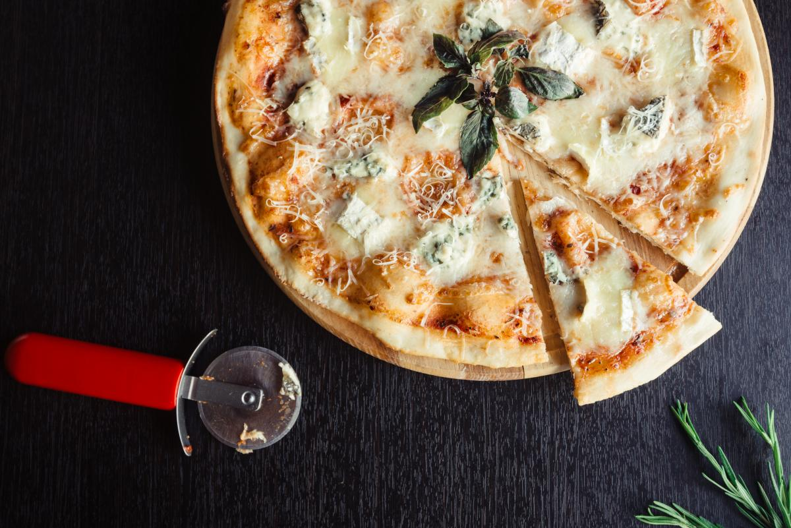

Смачна піца легко вийде в домашніх умовах, адже потрібні інгредієнти вже напевно є у вашому холодильнику.
Смачна піца легко вийде в домашніх умовах, адже потрібні інгредієнти вже напевно є у вашому холодильнику.
Основа начинки у цій піци (не дивуйтеся) - сир. Точніше - чотири
різних види сирів. А саме: моцарелла, пармезан, горгонзола (або
будь-який інший сир з блакитною пліснявою) і емменталь (або маасдам).
Цікавий факт: справжню італійську моцарелу роблять виключно з
молока буйволів. На 250-300 грамів тіста нам знадобиться:
Розкачане в 2-3 мм тісто для піци змащуємо олією. Або тонким шаром вершкового або томатного соусу. При бажанні можна посипати спеціями, наприклад - орегано. На тісто кладемо нарізані моцарелу, потім Емменталь, горгонзолу, і посипаємо тертим пармезаном. Викладаємо на пергамент в розігріту до 220-250 °C духовку приблизно на 10-15 хвилин. Сир розплавився і почав трохи запікатися, а тісто підрум'янилося - значить піца готова! Для прикрашання можна додати листочки базиліка.
